Fragile Express. Сервис доставки хрупких посылок по России
Fragile Express — это сервис доставки, который позволяет быстро рассчитать стоимость отправки,
оформить доставку онлайн и отслеживать посылку на каждом этапе.
Пользователь может выбрать удобный способ отправки — вызвать курьера или привезти посылку в отделение —
а также выбрать способ получения.
Основная задача сервиса — сделать процесс отправки посылки максимально простым и прозрачным.
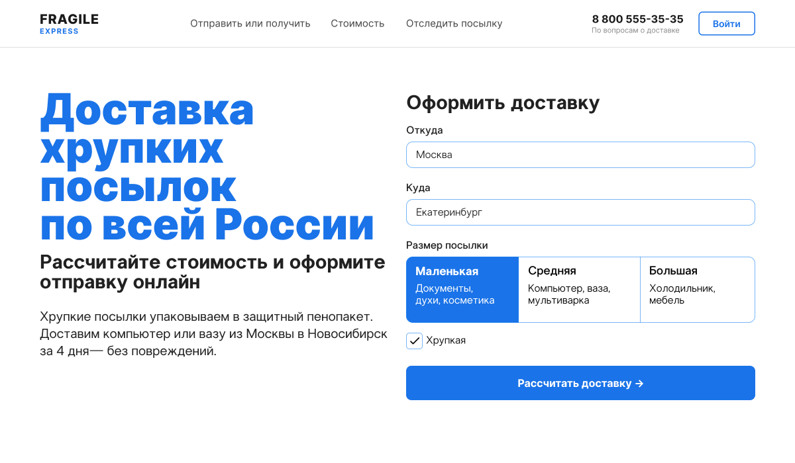
Главная страница сервиса
Проблема
Отправка посылок через традиционные службы доставки часто неудобна. Пользователь сталкивается с несколькими проблемами:
- — стоимость доставки непонятна до оформления,
- — необходимо ехать в отделение,
- — сложно выбрать способ доставки,
- — оформление занимает много времени.
Особенно сложно отправлять хрупкие вещи — электронику, стекло или технику. Такие посылки требуют аккуратной упаковки и надежной доставки. Поэтому важно создать сервис, который позволит оформить отправку быстро и безопасно.
Решение
Fragile Express — сервис доставки хрупких посылок, который позволяет оформить отправку полностью онлайн.
- — рассчитать стоимость доставки заранее,
- — выбрать способ отправки и получения,
- — указать данные отправителя и получателя,
- — оплатить доставку онлайн,
- — отслеживать посылку на каждом этапе.
Весь процесс занимает несколько минут.
Основной пользовательский флоу
Чтобы спроектировать сервис, я сначала собрал полный пользовательский сценарий.
Пользователь проходит несколько шагов:
- — расчёт доставки,
- — оформление отправки,
- — оплата,
- — подтверждение заказа,
- — отслеживание доставки.
Ниже показан полный флоу сервиса.
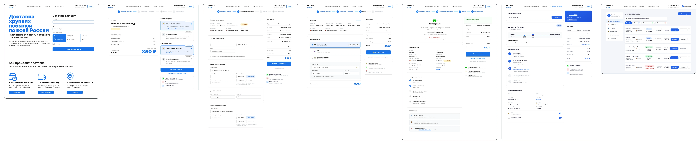
Полный флоу сервиса
Расчёт доставки
На первом этапе пользователь вводит параметры отправки:
- — город отправления,
- — город назначения,
- — размер посылки,
- — тип груза.
После этого сервис сразу показывает стоимость и срок доставки.
Стоимость рассчитывается прозрачно. Пользователь видит:
- — базовый тариф,
- — стоимость за расстояние,
- — доплату за хрупкий груз.
Это помогает понять, из чего складывается итоговая цена.

Страница расчёта стоимости доставки
Состояния расчёта
Для расчёта предусмотрены разные состояния интерфейса:
- — загрузка,
- — пересчёт стоимости,
- — ошибка сервиса,
- — недоступность курьерской доставки в районе пользователя.
Такие состояния помогают пользователю понимать, что происходит в системе, и не теряться в процессе.
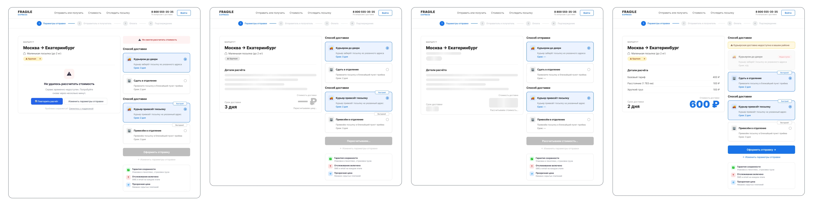
Состояния расчёта
Выбор способа отправки
После расчёта пользователь может выбрать удобный способ отправки:
- — курьер заберёт посылку,
- — сдать посылку в отделение.
Также можно выбрать способ получения:
- — доставка курьером,
- — получение в пункте выдачи.
Для каждого варианта показывается срок доставки. Это помогает пользователю выбрать наиболее удобный сценарий.
Оформление отправки
На следующем шаге пользователь заполняет данные отправителя и получателя.
Форма включает:
- — имя отправителя,
- — телефон и email,
- — адрес забора,
- — данные получателя,
- — адрес доставки,
- — дату и временной слот.
Я разделил форму на понятные логические блоки, чтобы уменьшить когнитивную нагрузку и сделать сценарий предсказуемым.
Выбор пункта выдачи
Если пользователь выбирает отправку через отделение, он может выбрать ближайший пункт сдачи.
Для этого я использовал:
- — карту,
- — список ближайших отделений,
- — поиск по адресу.
Каждый пункт показывает:
- — расстояние,
- — адрес,
- — часы работы.
Так пользователь может быстро выбрать удобное отделение рядом с собой.
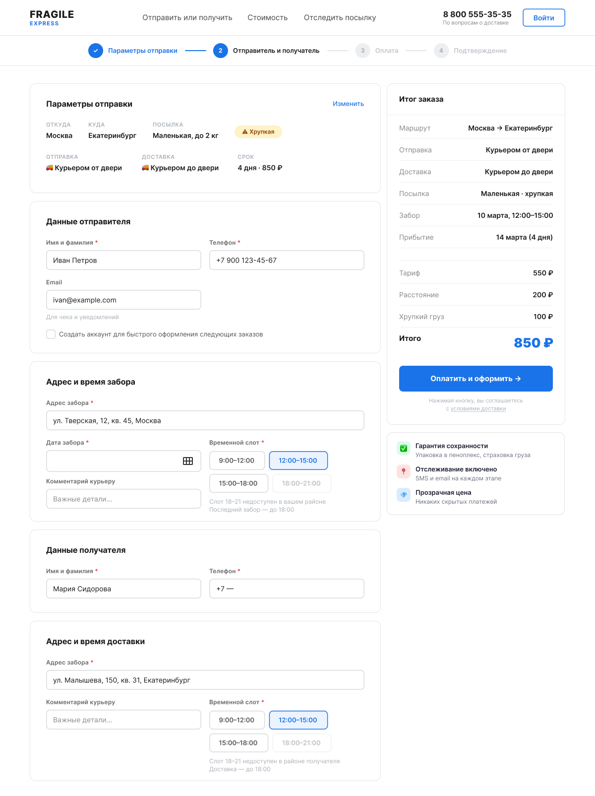
Страница оформления отправки курьером
Страница оформления отправки через ПВЗ
Адресная книга и автоподбор
Чтобы ускорить оформление, в сервисе предусмотрен автоподбор адреса и адресная книга.
Пользователь может:
- — выбрать адрес из сохранённых,
- — добавить новый,
- — использовать адресную книгу в повторных отправках.
Это сокращает время заполнения формы и делает повторные сценарии удобнее.
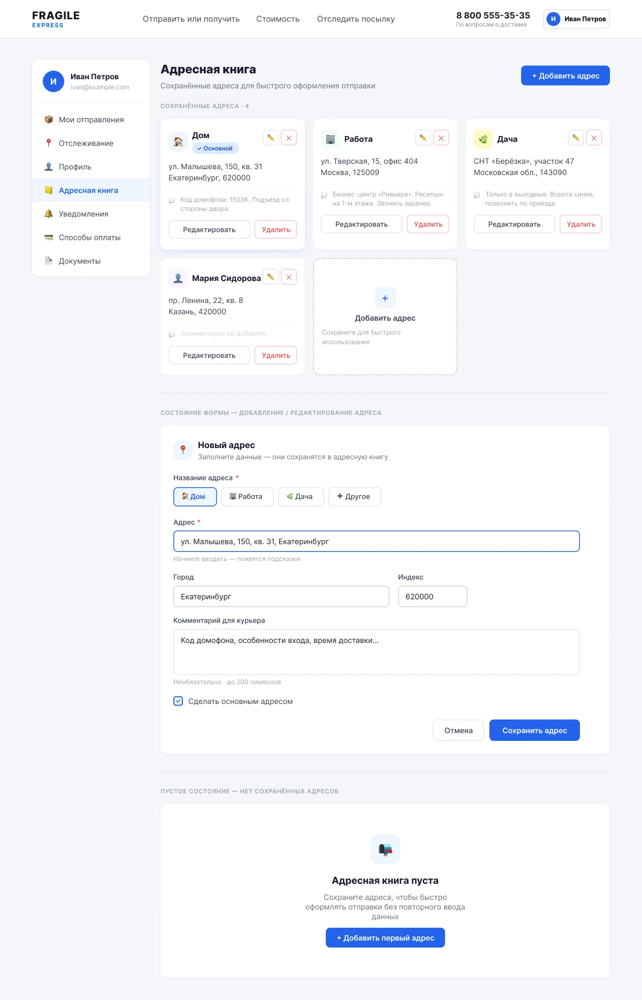
Состояния формы и ошибки
В интерфейсе предусмотрены разные состояния ошибок:
- — неверный номер телефона,
- — не заполнено имя получателя,
- — адрес не найден,
- — нет доступных временных слотов,
- — нет пунктов выдачи поблизости.
Ошибки отображаются рядом с полями и помогают пользователю быстро исправить данные, не прерывая сценарий.
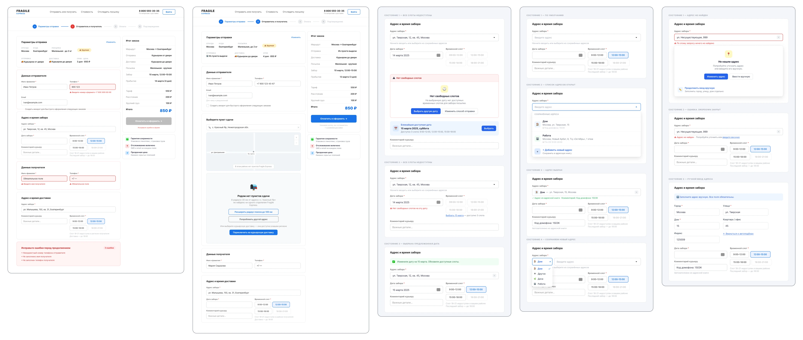
Состояния формы и ошибки
Оплата
После заполнения данных пользователь переходит к оплате.
Доступны несколько способов:
- — банковская карта,
- — СБП,
- — наличные курьеру.
На экране оплаты пользователь видит итоговую сумму, детали заказа и способы оплаты в одном контексте.
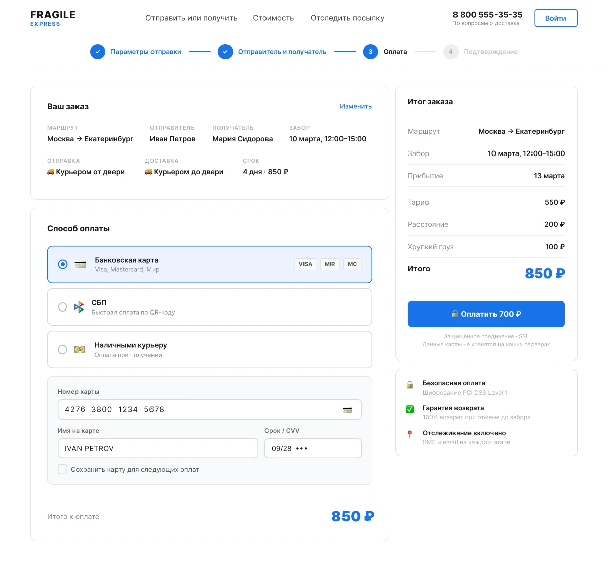
Экран оплаты
Состояния оплаты
Для оплаты я также предусмотрел дополнительные состояния:
- — обработка платежа,
- — ошибка оплаты.
Если платёж не проходит, пользователь может попробовать снова или выбрать другой способ оплаты.
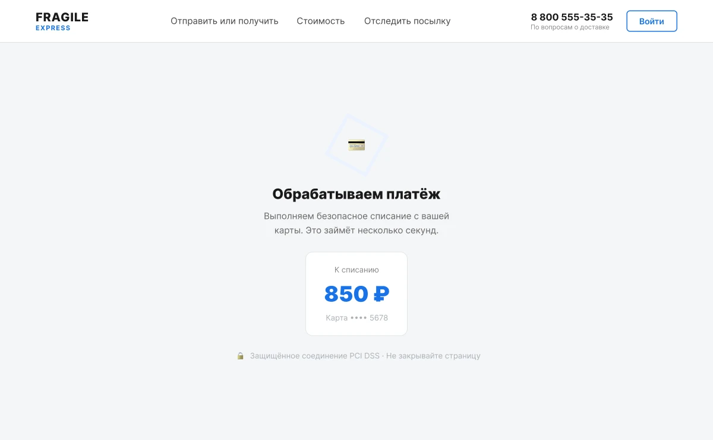
Обработка платежа
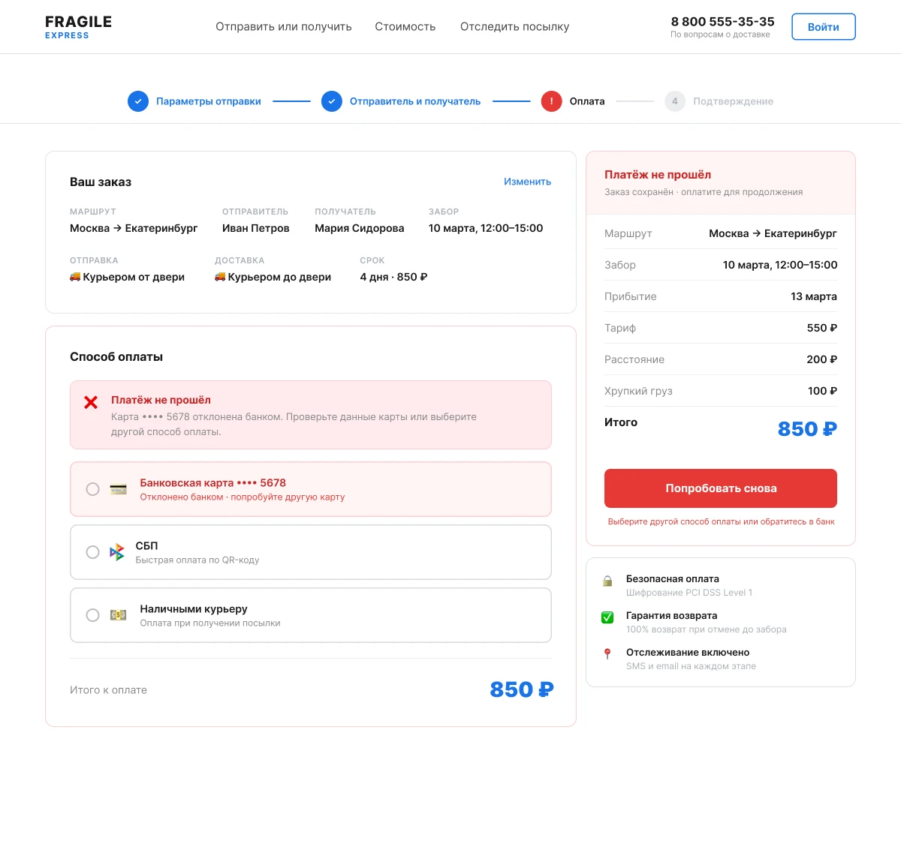
Ошибка оплаты
Подтверждение заказа
После успешной оплаты пользователь видит экран подтверждения.
На нём отображаются:
- — номер заказа,
- — детали отправки,
- — дата забора,
- — ожидаемая дата доставки,
- — дальнейшие шаги.
Этот экран подтверждает действие пользователя и сразу объясняет, что будет происходить дальше.
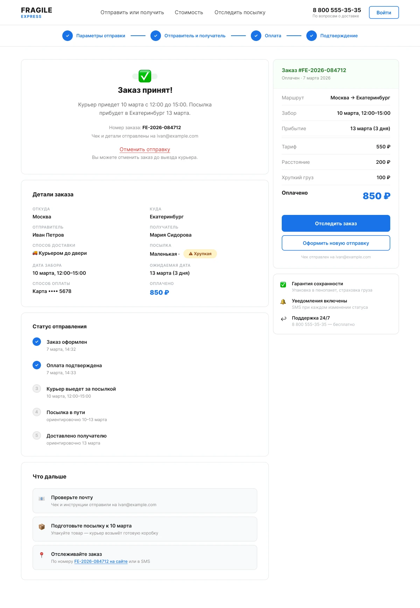
Подтверждение оплаты и заказа
Отслеживание доставки
После оформления пользователь может отслеживать посылку в реальном времени.
Экран показывает:
- — маршрут доставки,
- — текущий статус,
- — историю статусов,
- — ожидаемую дату доставки.
Пользователь также получает SMS и email-уведомления при изменении статуса.
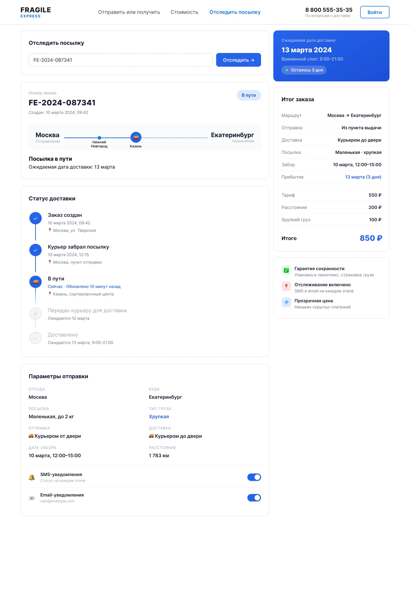
Экран трекинга посылки
Личный кабинет
В личном кабинете пользователь может управлять своими отправлениями и данными.
Доступные разделы:
- — мои отправления,
- — отслеживание,
- — профиль,
- — адресная книга,
- — способы оплаты,
- — уведомления.
Здесь можно отслеживать текущие заказы, повторять отправки и быстро использовать сохранённые данные.
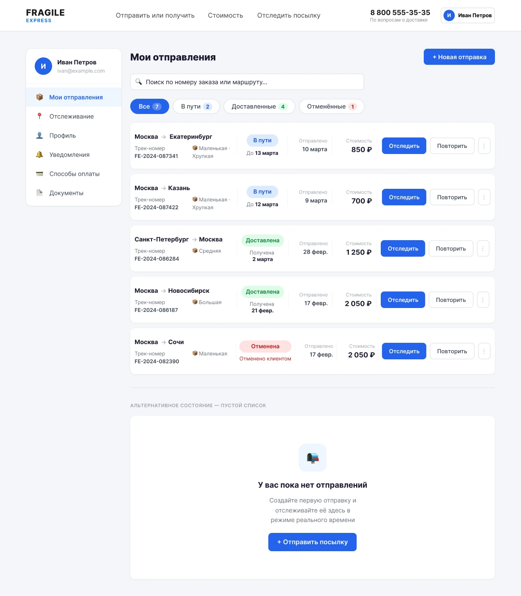
Экран отправлений пользователя
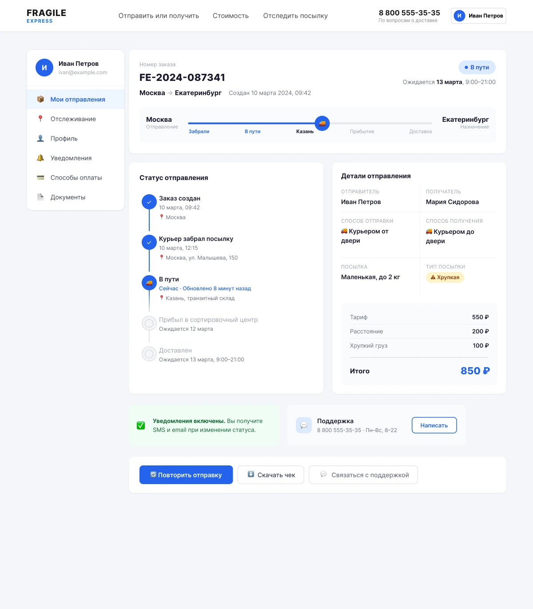
Детали отправления
Повтор отправки
Чтобы упростить повторные сценарии, в сервисе можно повторить предыдущий заказ.
Система автоматически подставляет:
- — маршрут,
- — данные отправителя,
- — данные получателя,
- — адреса и основные параметры посылки.
Пользователь может изменить их перед оформлением, если это нужно.
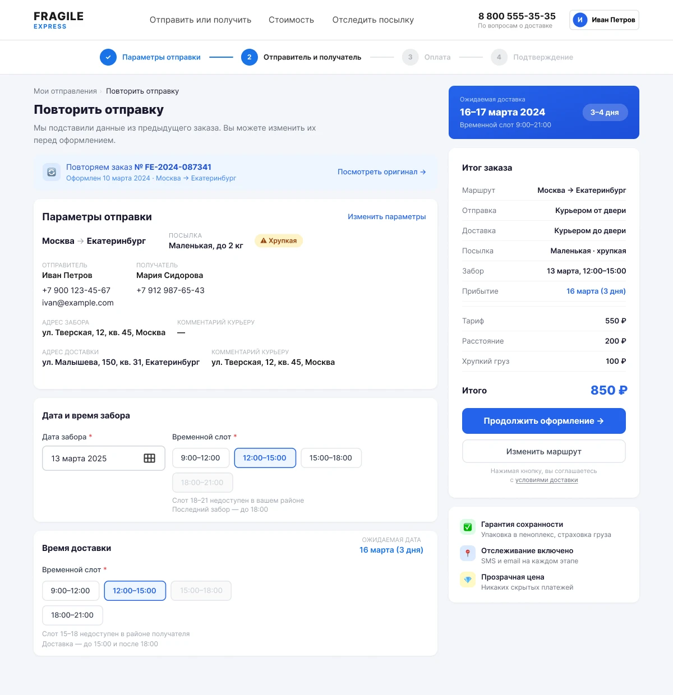
Экран повторной отправки
Отмена отправки
Пользователь может отменить заказ до выезда курьера.
Перед отменой появляется подтверждение с информацией о возврате средств. После отмены пользователь видит отдельный экран со статусом заказа и сроками возврата денег на карту.
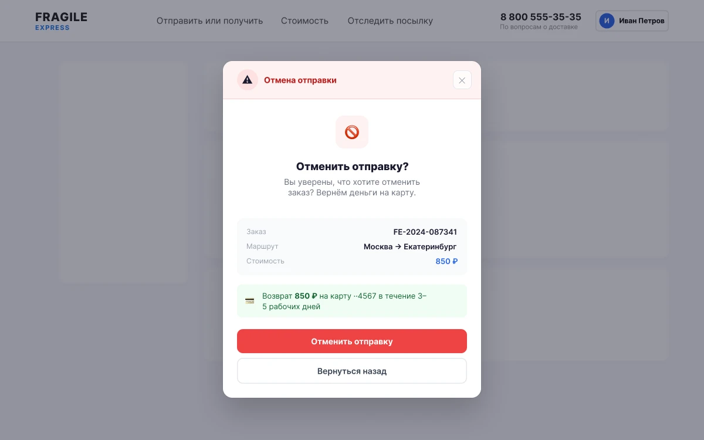
Модальное окно отмены отправки
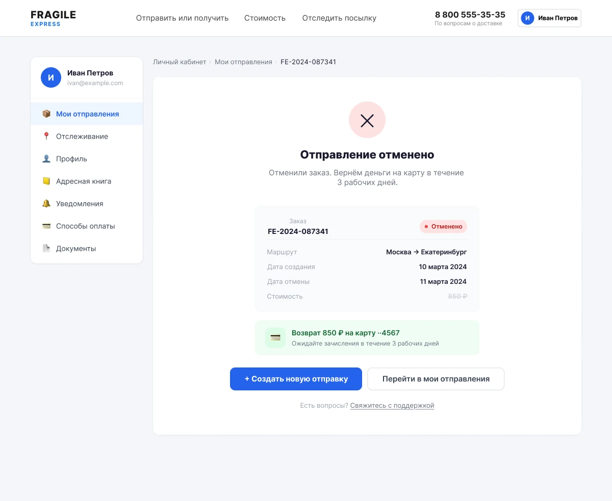
Экран отменённого отправления
UX-решения
При проектировании сервиса я сфокусировался на нескольких ключевых UX-решениях:
- — прозрачный расчёт стоимости,
- — понятный выбор способа отправки и получения,
- — автоподбор адреса и адресная книга,
- — обработка ошибок без разрыва сценария,
- — отслеживание доставки в реальном времени,
- — удобные повторные сценарии через личный кабинет.
Эти решения помогают пользователю пройти путь от расчёта до получения посылки быстро и предсказуемо.

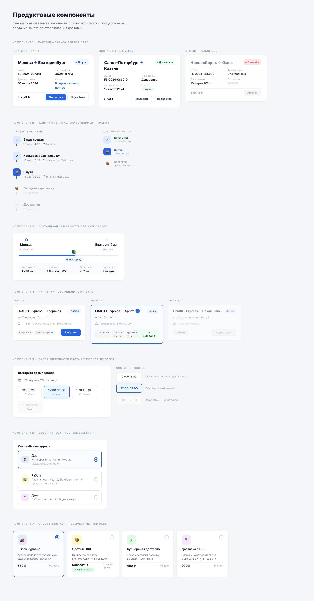
Результат
В результате получился сервис, который позволяет полностью оформить доставку онлайн.
- — рассчитать стоимость доставки,
- — выбрать удобный способ отправки,
- — оформить отправку за несколько минут,
- — отслеживать посылку на каждом этапе.
Сервис делает процесс доставки простым, прозрачным и предсказуемым.